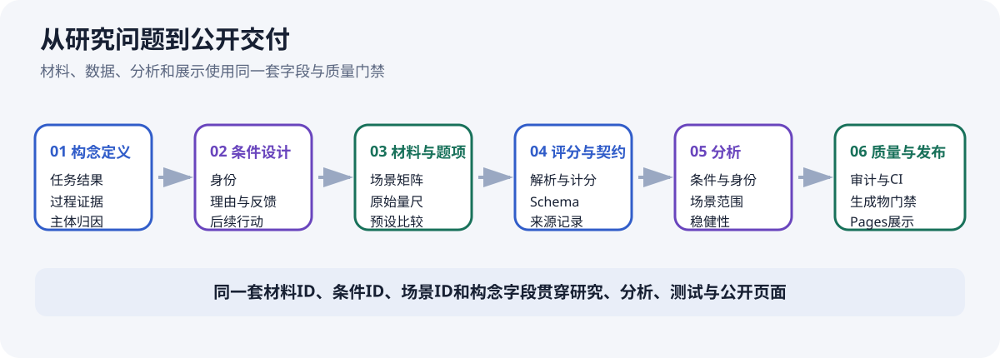
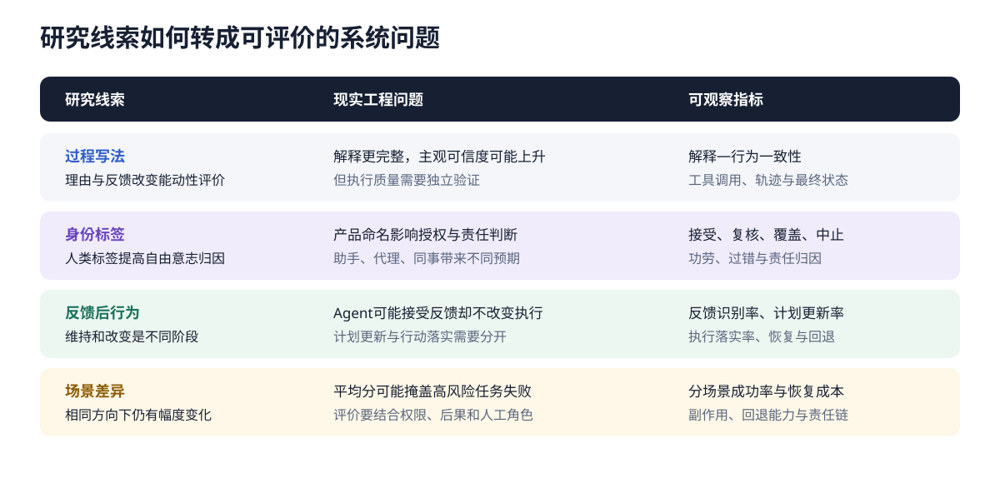

高结构过程写法对应更高的能动性评分
包含理由、反思、反馈与后续行动的成套写法，比只包含较长背景和最终选择的写法获得更高的能动性评分。
01
研究A包含360次DeepSeek模型问卷评分输出，覆盖8个任务场景、6种过程写法和AI／人类两种身份标签。主要差异均位于1—7分量尺；16和48表示材料组合的配对数量。
包含理由、反思、反馈与后续行动的成套写法，比只包含较长背景和最终选择的写法获得更高的能动性评分。
任务场景和过程写法相同时，人类标签下的自由意志归因高于AI标签。
过程差异和身份差异在多个任务中重复出现，不同场景中的变化幅度并不相同。
03
项目工作从构念定义延伸到公开交付。研究设计、数据结构、分析脚本和页面使用同一套条件、场景、材料与构念标识，便于追踪每个结果来自哪里。
定义任务结果、过程证据与主体归因；设计身份、理由、反馈和后续行动条件；映射题项、量尺与预设比较。
建立响应解析、量表计分、场景聚合、材料矩阵和外部评分Schema，区分历史响应、固定示例与未来评价记录。
加入材料结构审计、严格JSON、生成物漂移检查、历史输出保护、mock smoke和双平台CI。
统一组装项目总览、研究A结果页、研究B设计页、兼容路由和复现文档，形成可直接检查的公开成果。

04
任务结果、可见过程和主体归因经常同时进入评价。过程监督关注中间步骤，Agent评测关注工具与执行轨迹，产品研究关注用户信任与授权，风险管理关注场景、权限和责任链。项目把这些问题放进同一套可观察结构中。
最终答案、过程证据和主体归因需要分别记录。
接收反馈、更新计划和改变执行是三个不同阶段。
身份名称、解释方式与自动化范围会影响信任、授权和责任分配。
同一能力在不同风险、权限和后果下需要不同的评价与门禁。

产品评估还可以观察用户在系统正确时是否采纳、错误时是否覆盖，以及信任能否随准确率、不确定性和执行权限变化；这构成信任校准问题。
05
控制身份与过程信息
使用统一题项记录评价
按条件、身份和场景汇总
比较差异与场景变化
保留材料、数据和脚本
研究A使用单一DeepSeek API配置的历史响应；研究B当前聚焦材料、评价规则和离线分析方案。仓库保存数据来源、分析脚本、结构审计和页面构建流程。